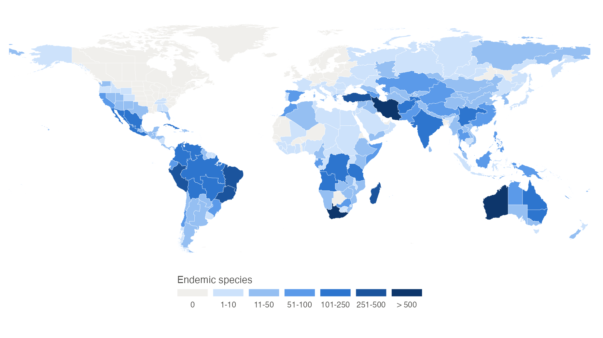
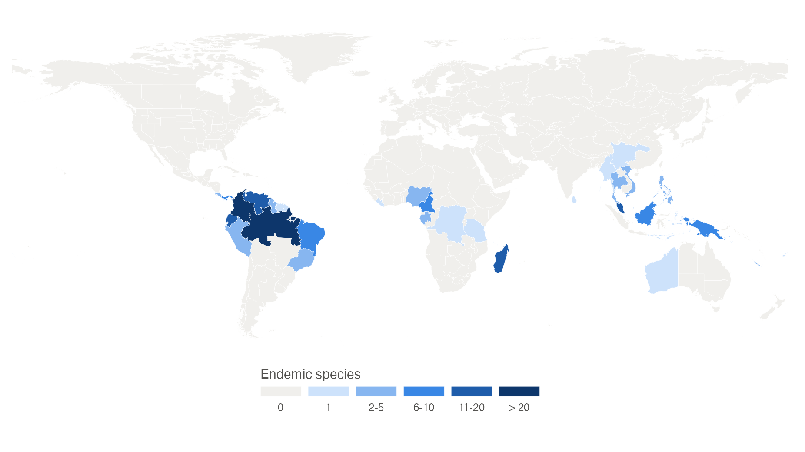

Here in this article, we show how to use the package’s function
endemicMap to map where the species of any plant family or
genus are endemic. A species is endemic to a botanical country when it
is native to that botanical country only, following the level 3 of the
World Geographical
Scheme for Recording Plant Distributions. While powoMap
shows where species occur (species richness), endemicMap
shows where species are restricted to, which highlights centres of
endemism and areas of conservation priority.
Setup
Install the latest development version of expowo from GitHub:
#install.packages("devtools")
devtools::install_github("DBOSlab/expowo")1. Mining the species list and their distribution
endemicMap uses as input data the species list and their
native distribution returned by powoSpecies. The example
below mines all accepted species of Fabaceae. The first search downloads
the data of the World Checklist of Vascular Plants (about 90 MB) only
once, so any following search takes a few seconds.
fab <- powoSpecies(family = "Fabaceae",
verbose = FALSE)2. Mapping the endemic species of a family
To map the endemic species, just provide the output of
powoSpecies to endemicMap. The function counts
the species whose native distribution, in the column
native_to_botanical_countries, has a single botanical
country. The map of botanical countries is downloaded from the TDWG repository only once and
kept with the WCVP data. Setting save = TRUE writes the map
within a subfolder named after the current date, in any of the formats
JPG, PDF, PNG or TIFF.
endemicMap(inputdf = fab,
save = TRUE,
dir = "results_endemicMap",
filename = "endemic_map_Fabaceae",
format = "png")
FIGURE 1. Number of Fabaceae species endemic to each botanical country.
About half of the legume species are endemic to a single botanical
country. The richest centres of legume endemism are Western Australia
(1,112 endemic species), the Cape Provinces of South Africa (825) and
Iran (731), followed by Madagascar, Turkey and eastern Brazil.
3. Choosing the classes of the map
The classes of endemic species are set with the argument
breaks, which gives the upper limit of each class.
Botanical countries without endemics are always shown in their own
class, and so are those with more endemics than the last limit. For a
small family such as Lecythidaceae, with about 400 species, narrower
classes give a more informative map. The legend title can be changed
with leg_title.
lecy <- powoSpecies(family = "Lecythidaceae",
verbose = FALSE)
endemicMap(inputdf = lecy,
breaks = c(1, 5, 10, 20),
leg_title = "Endemic species",
save = TRUE,
dir = "results_endemicMap",
filename = "endemic_map_Lecythidaceae",
format = "png")
FIGURE 2. Number of Lecythidaceae species endemic to each botanical country, with custom classes.
The Brazil nut family has its main centre of endemism in Amazonia and
the northern Andes (Brazil North, Colombia and Ecuador), with secondary
centres in Madagascar, the Malay Peninsula, Borneo and New Guinea.
4. Using the map object
endemicMap returns a ggplot object, so the
map can be customised with any function of ggplot2. The
data of the map also has the number of endemic species of each botanical
country in the column endemics.
p <- endemicMap(fab, verbose = FALSE)
# Botanical countries with most endemic species
top <- p$data[order(-p$data$endemics), c("botanical_country", "endemics")]
head(sf::st_drop_geometry(top))
# Adding a title
p + ggplot2::ggtitle("Endemic legumes of the world")5. Mapping endemics from other data
Any data frame with one species per row and a column with its native
distribution in botanical countries, separated by commas, can be mapped.
Use the argument distcol to set the name of the column with
the distribution. When the input data has synonyms (a
status column, as in
powoSpecies(synonyms = TRUE)), only accepted species are
counted.